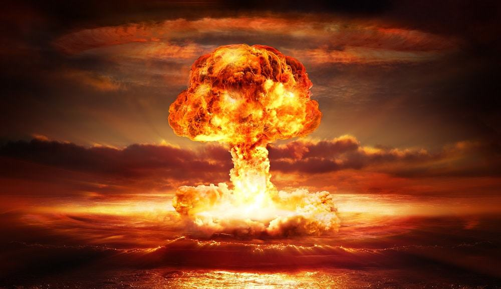

Bomba Atômica, ou bomba nuclear, é uma arma que consiste num projétil explosivo lançado por
aviões ou por
mísseis.
Ela funciona em decorrência dos processos de fusão e fissão nuclear e tem um alto poder de destruição. A
bomba lançada na cidade de Hiroshima tinha duas cargas compostas de urânio 235, num total de cerca de 60
kg.
A bomba lançada em Nagasaki era composta de cerca de 6,4 kg de plutônio 239. Esse elemento surge a
partir da
transformação do urânio 238. O urânio 235 (235U) e o plutônio 239 (239Pu) são elementos que possuem um
potencial energético bastante elevado e, por isso, representam um grande perigo.
Como funciona a bomba atomica
As bombas lançadas sobre as cidades japonesas decorreram do processo de fissão. Outro
processo que resulta no
funcionamento de bombas nucleares é a fusão.
Fissão é quebra do núcleo do átomo. Um nêutron atinge o núcleo do átomo e se parte. Num processo que
acontece em alta velocidade, outros nêutrons atingem outros núcleos.
Fusão é junção do núcleo de dois ou mais átomos. Esses processos liberam uma quantidade elevada e
extremamente potente de energia. Esse é o motivo pelo qual ocorre a explosão.
As bombas mais potentes e que têm maior poder de destruição são as que contêm hidrogênio. São conhecidas
como bombas H ou bombas de fusão porque é assim que elas funcionam.
Poder de Destruição
Nas cidades de Hiroshima e Nagasaki, o ar transformou-se numa espécie de bola de fogo que se
expandiu de
forma veloz.
Em decorrência da grande quantidade de energia térmica que foi liberada, essa bola era tão quente quanto
à
superfície do Sol. Como consequência, tudo o que se encontrava num raio de 1 km transformou-se em
cinzas.
O solo também sofreu um superaquecimento. Os gases se expandiram provocando uma onda de choque
ocasionando a
queda de 62 mil prédios em Hiroshima. A cidade tinha 90 mil prédios.
Os efeitos causados pela radiação foram queimaduras, problemas respiratórios, perturbações mentais,
deformações físicas e câncer em milhares de pessoas.
Aquelas que olharam para a explosão ficaram cegas e houve uma chuva radioativa que contaminou a água e o
solo. Durante anos as pessoas sofreram com os efeitos das bombas.
Após o lançamento das bombas em Hiroshima e Nagasaki, as armas nucleares continuaram a ser
desenvolvidas.
Existem milhares de armas ainda mais potentes do que as que foram lançadas sobre o Japão na Segunda
Guerra
Mundial. A maior parte delas pertence aos EUA e à Rússia.
A ONU é responsável por regular a política nuclear mundial. Igualmente, o Tratado de Não- Proliferação
de
Armas Nucleares (TNP) é um acordo através dos quais os países signatários se comprometem a usar a
energia
nuclear para fins pacíficos.
Aspectos Históricos
Receosos com a perseguição dos nazistas aos judeus, vários cientistas se deslocaram para os
EUA. Entre eles,
se destaca Albert Einstein que assumiu uma cadeira no Instituto de Estudos Avançados de Princeton.
Junto com o físico húngaro Leo Szilard, Einstein alertou o presidente Franklin Roosevelt sobre a
possibilidade de os nazistas desenvolverem uma bomba atômica.
Eles acreditavam que os Estados Unidos deveriam se antecipar a este movimento e financiar a pesquisa que
levaria à descoberta da fissão do átomo.
Na sequência, foi dado início ao Projeto Manhattan, responsável pela criação da bomba atômica dirigido
pelo
físico estadunidense Julius Robert Oppenheimer.
Os cientistas usaram como base as pesquisas de Albert Einstein que foram fundamentais para o
desenvolvimento
da energia atômica.
Antes do lançamento da bomba atômica, a arma nuclear foi testada no dia 16 de julho de 1945 no deserto
do
Novo México (EUA).
Segunda Guerra Mundial
Até hoje, a bomba atômica foi utilizada em somente em duas situações durante a Segunda
Guerra Mundial.
Na Segunda Guerra, os países se dividiram. De um lado encontramos uma aliança formada por Alemanha,
Itália
e
Japão; e do outro por Grã-Bretanha, União Soviética e EUA.
Em 1945, a Alemanha e a Itália já tinham se rendido. No entanto, a guerra prosseguia no Pacífico onde
Japão
e Estados Unidos travavam uma dura luta de conquista ilha por ilha.
Guerra no Pacífico
Em 1941, o Japão havia atacado a Pearl Harbor, base naval norte-americana, sem que tivesse
sido feita
qualquer declaração de guerra aos EUA. Por isso, os americanos lutaram contra os japoneses no Pacífico.
Os americanos perceberam que o Japão não se renderia e julgavam uma invasão ao país muito custosa em
termos
humanos e financeiros. Assim, os militares resolveram lançar a bomba atômica no Japão para forçar a
rendição.
Desta maneira, a Bomba de Hiroshima foi lançada no dia 6 de agosto de 1945 pelo avião bombardeiro
norte-americano Enola Gay.
A bomba recebeu o nome de Little Boy e detonou a 580 metros de altura a cidade de Hiroshima, no Japão. A
cidade foi destruída e cerca de 140 mil pessoas morreram.
Muitas pessoas morreram no momento da explosão, enquanto outras faleceram em decorrência das sequelas
deixadas pela arma nuclear.
Dias depois foi lançada outra bomba em Nagasaki. Chamava-se Fat Man, destruiu grande parte da cidade e
provocou a morte de cerca de 70 mil pessoas.
A Fat Man era mais potente do que a Little Boy, apesar de o seu estrago ter sido menor. Isto aconteceu
pelo
fato de a cidade estar localizada numa região montanhosa.
O Japão rendeu-se no dia 2 de setembro de 1945.
Armas Nucleares Brasileiras
Embora o Brasil tenha capacidade para produzir armas nucleares, o país renegou o direito de
tê-las através da
assinatura de vários tratados internacionais.
Em 1979 tinha sido iniciado um projeto secreto chamado Programa Paralelo. Esse programa pretendia
desenvolver armas de destruição maciça e somente foi anunciado para os brasileiros na década de 90.
Tratava-se de um projeto que seria capaz de produzir bombas atômicas mais potentes do que as lançadas em
Hiroshima e Nagasaki, mas foi desmantelado.